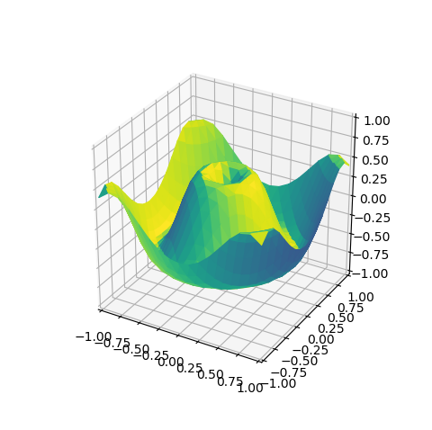
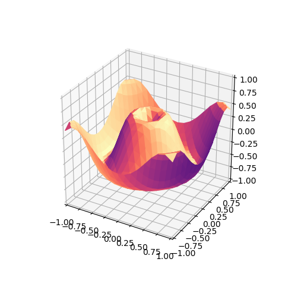
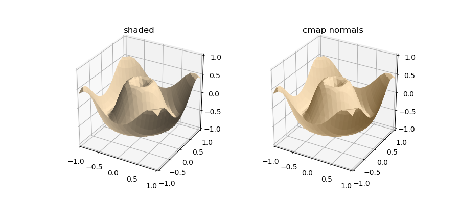

Color Mapped Surface Normals¶
Surface color can be defined based on the surface normals that are mapped to colors by calling the surface object method:
surface.map_cmap_from_normals( cmap, direction )
The cmap argument is a color map or registered color map name. The direction argument is a 3D array in x,y,z coordinates, which is the direction of incident light. If no arguments are provided, as shown in the following plot, the default values for cmap and direction are viridis, the Matplot default, and [1,0,1], respectively.
The only difference in the Geometric Mapping script from the script given in the Hello World tutorial is that normal color mapping is used instead of shading, as shown in the highlighted line.
import numpy as np
import matplotlib.pyplot as plt
import s3dlib.surface as s3d
# 1. Define function to examine ....................................
def planarfunc(xyz) :
x,y,z = xyz
r = np.sqrt( x**2 + y**2)
Z = np.sin( 6.0*r )/2
return x,y,Z
# 2. Setup and map surface .........................................
surface = s3d.PlanarSurface(4)
surface.map_geom_from_op( planarfunc )
surface.map_cmap_from_normals( )
# 3. Construct figure, add surface plot ............................
fig = plt.figure(figsize=plt.figaspect(1))
ax = plt.axes(projection='3d')
ax.set(xlim=(-1,1), ylim=(-1,1), zlim=(-1,1))
ax.add_collection3d(surface)
plt.show()
By assigning a cmap value, various coloring effects can be created. For example, using:
surface.map_cmap_from_normals( 'magma' )
The following plot was created.
More details are provided in the Color Mapping Normals guide.
Shading is the only color mapping operation that is additive. Shading can be applied to any surface.
import numpy as np
from matplotlib import pyplot as plt
import s3dlib.surface as s3d
import s3dlib.cmap_utilities as cmu
# 1. Define function to examine .....................................
def planarfunc(xyz) :
x,y,z = xyz
r = np.sqrt( x**2 + y**2)
Z = np.sin( 6.0*r )/2
return x,y,Z
# 2. Setup and map surfaces .........................................
surf_color = [1,.9,.75]
cmu.rgb_cmap_gradient([0.25,0.15,0],surf_color,'cardboard')
surface_1 = s3d.PlanarSurface(4, color=surf_color)
surface_1.map_geom_from_op( planarfunc ).shade()
surface_2 = s3d.PlanarSurface(4)
surface_2.map_geom_from_op( planarfunc )
surface_2.map_cmap_from_normals('cardboard')
# 3. Construct figures, add surface, plot ...........................
fig = plt.figure(figsize=(9,4))
ax1 = fig.add_subplot(121, projection='3d')
ax1.set(xlim=(-1,1), ylim=(-1,1), zlim=(-1,1) )
ax1.set_title('shaded')
ax1.add_collection3d(surface_1)
# .........
ax2 = fig.add_subplot(122, projection='3d')
ax2.set(xlim=(-1,1), ylim=(-1,1), zlim=(-1,1) )
ax2.set_title('cmap normals')
ax2.add_collection3d(surface_2)
# .........
plt.show()